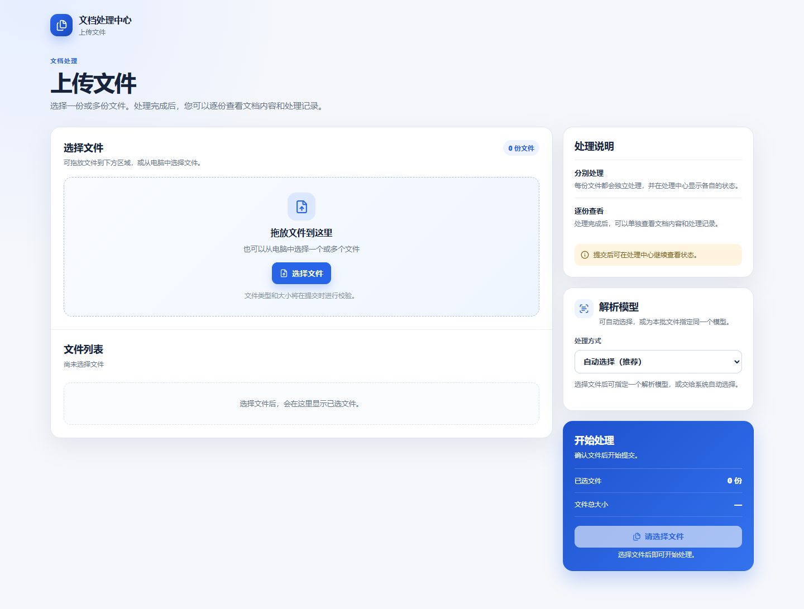
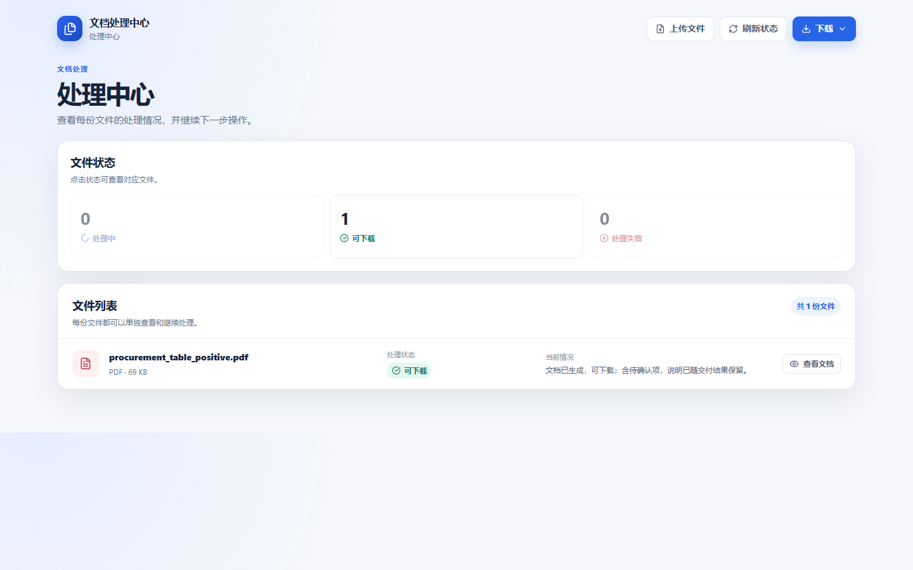
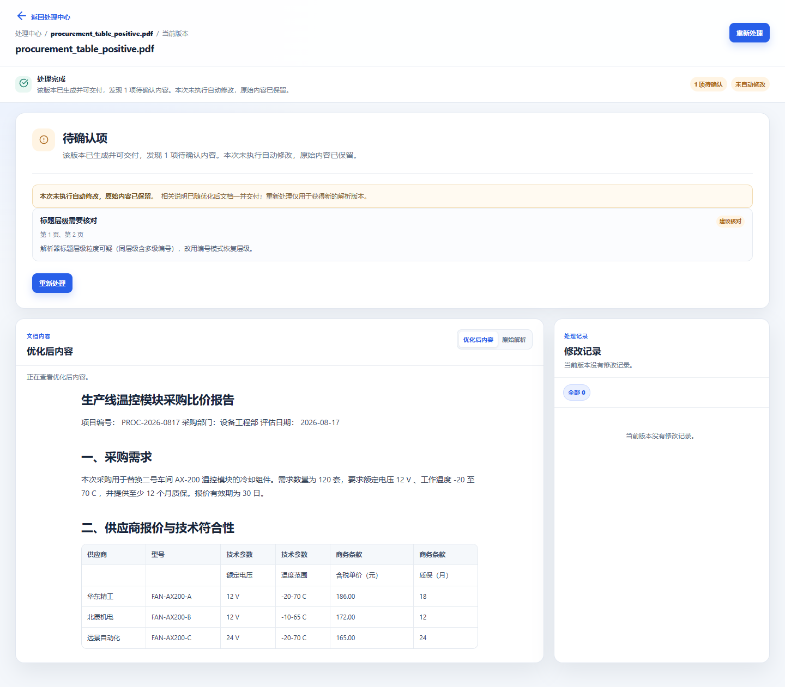
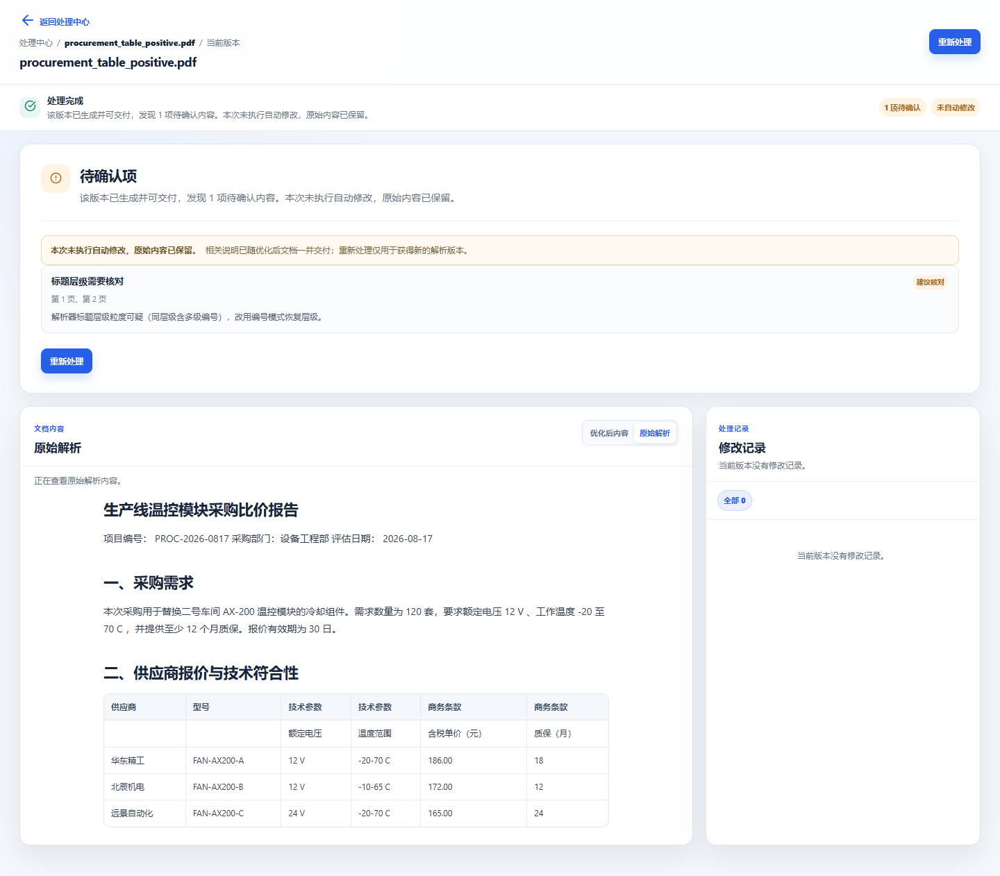

真实 Edge + 真实后端 + 真实 PDF,首次为工作台三页提供浏览器级视觉与点击流程证据。验证日期:2026-08-27。
| # | 步骤 | 结果 | 证据 |
|---|---|---|---|
| 1 | 打开上传页 | PASS | 标题"上传文件｜文档处理中心",双栏布局 |
| 2 | 选择 PDF 文件 | PASS | 徽章"1 份文件",队列 1 行 |
| 3 | 显式选择解析器 | FAIL* | *原生 select 的 option 为隐藏元素,等待 visible 超时——脚本定位问题,非产品缺陷;随后提交走默认自动路由并成功 |
| 4 | 提交任务 | PASS | 跳转 /tasks/aa577dde…,task_id 正确 |
| 5 | 等待处理完成 | PASS | 131 秒后状态"可下载" |
| 6 | 处理中心统计 | PASS | 0 处理中 / 1 可下载 / 0 处理失败,共 1 份文件 |
| 7 | 文档详情页 | PASS | 标题 procurement_table_positive.pdf,状态"处理完成" |
| 8 | 动作区检查 | PASS | 动作仅"重新处理"(符合 P0 前无确认按钮语义);1 项待确认、未自动修改 |
| 9 | 原始解析视图切换 | PASS | 切换生效,内容变化(SHA256 不同) |
| 10 | 直接 URL 恢复 | PASS | 直接打开 /tasks/{id} 完整渲染,状态"可下载" |




| 验收项 | 依据 |
|---|---|
| 上传 1 份文件 → 处理中心主链路 | step 1/2/4/5/6 全 PASS |
| 详情默认展示优化后内容 | "优化后内容"标签激活,正文/表格渲染正常 |
| 原始解析切换 | step9 PASS,视图内容变化 |
| 状态口径一致性(本样本) | metrics/statusDesc/revision 与 API 投影一致 |
| P0 前严格隐藏确认操作 | 详情页动作区仅"重新处理",无"采用当前结果" |
| 直接打开任务链接恢复 | step10 直接 goto /tasks/{id} 完整渲染 |
| 单一下载入口存在 | 处理中心顶部唯一"下载"按钮(展开未验证) |
| 缺口 | 说明 |
|---|---|
| 修订点击定位 | 本样本修订记录 0 条,无真实修订可点击 |
| 重新处理点击流程 | 按钮存在但未点击(API 层已由任务 API 测试覆盖) |
| 下载菜单展开与下载动作 | 入口存在,两类压缩包展开未验证 |
| 多文件提交、状态筛选点击 | 仅单文件样本 |
| 窄屏/响应式、键盘可达、aria-live | 仅 1440×900 视口 |
| 真实 Docling/MinerU 工作台浏览器 E2E | 本次为 markitdown 自动路由 |
| 问题 | 现状 | 建议 |
|---|---|---|
| 后端状态映射与计划文字偏离 | 后端将 manual_review_required / reparse_required / rejected 一律映射为"可下载"(实现注释为有意设计),本样本即 manual_review_required 但 UI 显示"可下载";与计划 4.2/4.3/5.2 文字语义不一致。UI 以透明文案兜底,无越权确认按钮 | 负责人裁决:修订计划文字,或修订状态映射 |
| 处理中心状态计数 | 前端只渲染 3 个计数(处理中/可下载/处理失败),计划 8.3 要求 4 个(含待确认);"待确认"在数据层存在但无计数按钮 | 轻度 UI 偏离,计划文字需同步 |
| favicon 404 | /favicon.ico 无路由,浏览器自动请求,无害 | 可不处理,或后端补空路由 |